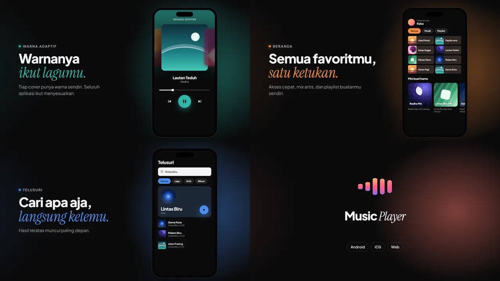
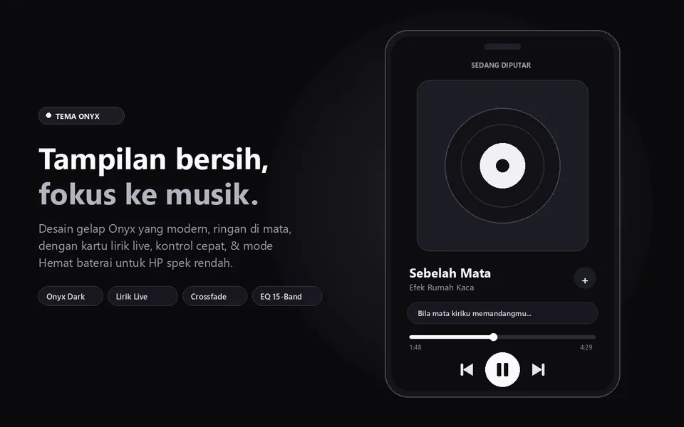
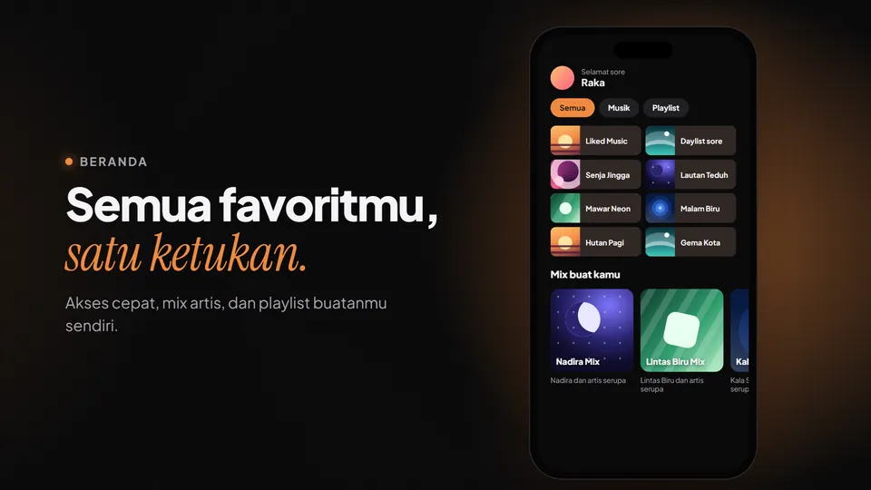
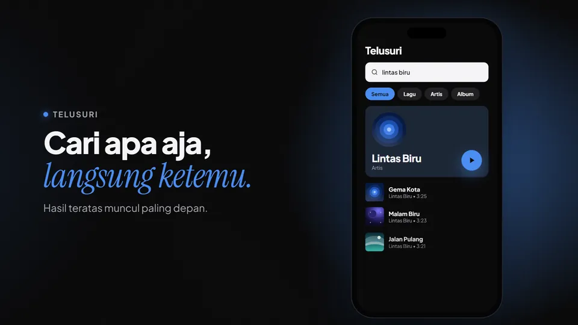
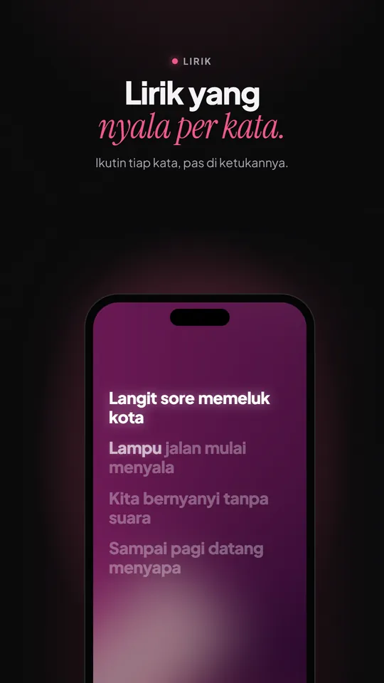
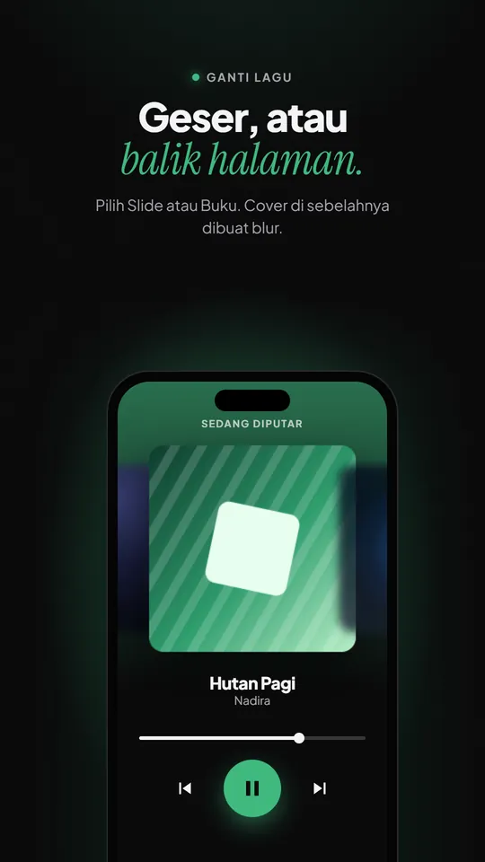
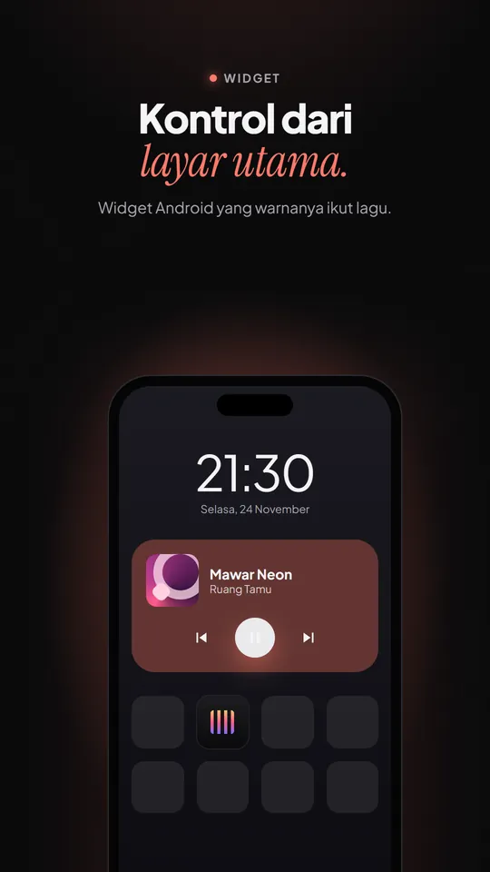
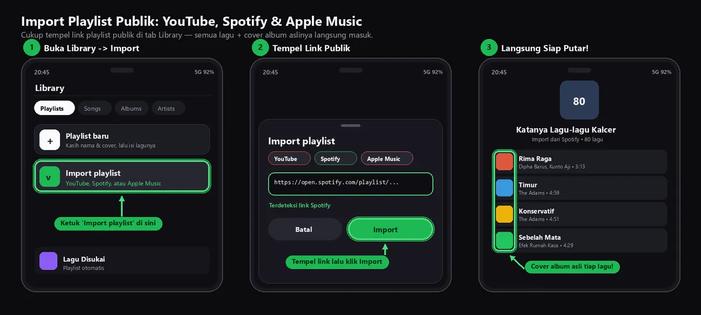
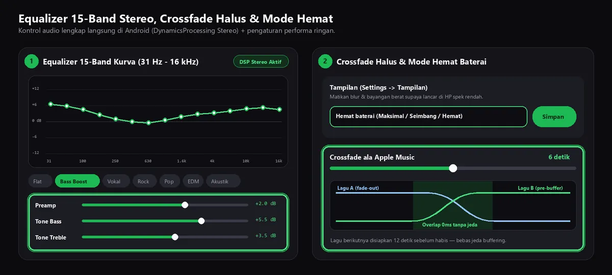

Fitur
Semua yang kamu butuhkan buat dengerin musik, tetap ringan di HP lawas.

Tampilan






Import playlist
Tempel link playlist publik YouTube, Spotify, atau Apple Music — jadi playlist lengkap dengan cover-nya.

Suara
Equalizer 15 band dengan preamp, bass & treble, plus crossfade halus antar lagu.

Radio otomatis
Antrean nyambung sendiri tanpa tombol tambahan.
3 mode tampilan
Maksimal, Seimbang, atau Hemat baterai.
Offline & auto-update
Simpan lagu untuk offline, update dari dalam app.